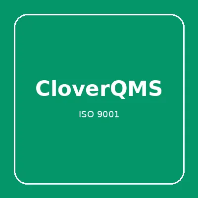

CloverLinks – Link-in-Bio und Link-Management, 25 % Provision
Produktprofil · Marktplatz-Daten 2026-10-13 · Verkaufsseiten-Recherche 2026-10-13 · Kategorien: Ohne Kategorie
- CloverLinks – Link-in-Bio und Link-Management, 25 % Provision ist ein/e Software, vertrieben über den Digistore24-Marktplatz von Anbieter hihdigital, gelistet seit 2026-08-24.
- Listenpreis $100.63; Digistore24 meldet — Checkout-Konversion, — Stornierungsquote und 25 % Affiliate-Provision.
- Verdienst pro Verkauf (Affiliate): $25.16 (Anbieter-seitige Statistik, keine Prognose).
Interesse an CloverLinks – Link-in-Bio und Link-Management, 25 % Provision? Aktueller Preis, Boni und Garantiebedingungen finden Sie auf der offiziellen Seite des Anbieters:
Offizielle Verkaufsseite ansehen
Affiliate-Link (Werbung) — wir verdienen ggf. eine Provision, ohne Mehrkosten für Sie.
Marktplatz-Daten
| Produkttyp | Software |
|---|---|
| Preis | $100.63 (Subscription) |
| Affiliate-Provision | 25 % |
| Garantie/Rückgabe | Laut Verkaufsseite des Anbieters — vor dem Kauf auf der offiziellen Seite prüfen |
| Anbieter | hihdigital (gelistet seit 2026-08-24) |
| Marktplatz-Statistiken* | Checkout-Konversion — · Stornoquote — · Verdienst/Verkauf $25.16 |
* Anbieter-seitige Statistiken von Digistore24; sie hängen von der Traffic-Qualität ab und sind keine Prognose.
Marktplatz-Beschreibung des Anbieters
Für Affiliates: CloverLinks für Link-in-Bio und Link-Management. 25 % Provision auf Pro und Business, automatische Aufnahme. Zielgruppe: Creator, Selbstständige und Teams mit professioneller Link-Seite. Pro ab 9 € / Monat (90 € / Jahr) Verwandter Tarif: Business Salespage: cloverlinks.com Affiliate-Support: hih-digital.com/affiliates/cloverlinks.html
Von der Verkaufsseite des Anbieters
Seitentitel: Digitale Visitenkarte bestellen | CloverLinks über Digistore24
Meta-Beschreibung: Link-in-Bio, QR-Code, vCard und Link-Analytics für Creator, Selbstständige und Teams. Ab 9 €.
Hauptüberschrift
Digitale Visitenkarte & Link-in-Bio
Abschnitts-Überschriften
- Ein Link für Profile, Kontaktdaten und Angebote
- So startest du mit CloverLinks
- Preise und Tarife
- Häufige Fragen zu CloverLinks
Einstiegstext
Alle wichtigen Links, Kontaktdaten und Angebote auf einer persönlichen, mobilen Seite bündeln.
CloverLinks verbindet Link-in-Bio, QR-Code, vCard und Auswertungen – ideal für Social Media, Events und persönliche Geschäftskontakte.
Monatliche Tarife. Kauf und Zahlung ausschließlich über Digistore24. Preise zzgl. gesetzlicher MwSt., sofern ausgewiesen.
Zahlung, Rechnung und Widerruf laufen über Digistore24. Es gelten die im Checkout ausgewiesenen Bedingungen, die Widerrufsbelehrung von Digistore24 und die AGB von HIH Digital Limited.
Recherche-Methode: rohes HTML · 400 Wörter · Qualität: medium · recherchiert am 2026-10-13. Vollständige Recherche-Datei (MD) ↗
Wie Produkte dieser Art geliefert werden
Allgemeiner Hinweis zu diesem Produkttyp (keine anbieterspezifische Anleitung): Software wird digital geliefert — entweder als direkter Download oder per Lizenzschlüssel/Mitgliederbereich nach dem Checkout. Für die genaue Anwendung von CloverLinks – Link-in-Bio und Link-Management, 25 % Provision sind die offizielle Verkaufsseite und die enthaltenen Materialien maßgeblich.
Gut zu wissen
- Keine Garantie-Formulierung in unserer Recherche gefunden — bestätigen Sie das Rückgabefenster auf der offiziellen Seite, bevor Sie kaufen.
- Marktplatz-Zahlen (Preis, Provision, Konversion, Stornoquote) — Quelle: offizielle Digistore24-Marktplatz-API (Affiliate-Sicht), Stand 2026-10-13. Gegenprüfung: Marktplatz-Suche nach Produkt-ID 722509.
- Verkaufsseiten-Zitate — Quelle: https://cloverlinks.com/order.html, abgerufen 2026-10-13 (Methode: rohes HTML). Verify: offizielle Seite öffnen.
- Garantie / Rückgabe — vom Anbieter festgelegt; vor dem Kauf auf der Verkaufsseite bestätigen.
- Nicht von uns geprüft: Produktqualität, Ergebnisse, Testimonials — kein Praxistest für dieses Listing durchgeführt.
Häufige Fragen zu CloverLinks – Link-in-Bio und Link-Management, 25 % Provision
Antworten aus dem Marktplatz-Snapshot (2026-10-13) und der Verkaufsseiten-Recherche (2026-10-13); Anbieteraussagen sind inline gekennzeichnet.
Was ist CloverLinks – Link-in-Bio und Link-Management, 25 % Provision?
CloverLinks – Link-in-Bio und Link-Management, 25 % Provision ist ein Angebot des Typs „Software" im Digistore24-Marktplatz, Anbieter: hihdigital, gelistet seit 2026-08-24. Digistore24 wickelt Checkout, Lieferung und Rückgaben ab.
Wie viel kostet CloverLinks – Link-in-Bio und Link-Management, 25 % Provision?
Der Digistore24-Marktplatz listet es für $100.63 (subscription). Preise legt der Anbieter fest und können sich ändern — der Marktplatz-Eintrag oben zeigt den Schnappschuss; die offizielle Verkaufsseite zeigt den aktuellen Preis.
Gibt es eine Geld-zurück-Garantie für CloverLinks – Link-in-Bio und Link-Management, 25 % Provision?
Unsere Verkaufsseiten-Recherche hat keine explizite Garantie-Formulierung gefunden. Viele Digistore24-Produkte bieten 60 Tage Geld-zurück, aber das legt jeder Anbieter selbst fest — bestätigen Sie es auf der offiziellen Verkaufsseite, bevor Sie kaufen.
Ist CloverLinks – Link-in-Bio und Link-Management, 25 % Provision seriös?
Wir bewerten keine Seriosität — wir veröffentlichen überprüfbare Zahlen: Anbieter hihdigital (gelistet seit 2026-08-24), Checkout-Konversion —, Stornoquote —, Affiliate-Verdienst/Verkauf $25.16 (alles Anbieter-seitige Marktplatz-Statistiken). Lesen Sie unsere 6-Punkte-Bewertungsmethode und entscheiden Sie anhand der Zahlen — oder diskutieren Sie CloverLinks – Link-in-Bio und Link-Management, 25 % Provision auf GitHub.
Wo kann ich CloverLinks – Link-in-Bio und Link-Management, 25 % Provision sicher kaufen?
Nur über die offizielle Verkaufsseite, die auf dieser Seite verlinkt ist (Checkout und Rückgaben laufen über Digistore24). Prüfen Sie dort Preis und Garantie vor der Bestellung. Der Link ist ein Affiliate-Link — der Kauf unterstützt diese Website ohne Mehrkosten für Sie.
Wie erhalte ich CloverLinks – Link-in-Bio und Link-Management, 25 % Provision nach der Zahlung?
Der Checkout läuft über Digistore24: Nach der Zahlung erhalten Sie Zugangsdaten und Ihr Abo-Dashboard. Lieferdetails für diesen Produkttyp: Software wird digital geliefert — entweder als direkter Download oder per Lizenzschlüssel/Mitgliederbereich nach dem Checkout. Bei Problemen kann der Digistore24-Käufersupport Ihre Bestellung wiederherstellen.
CloverLinks – Link-in-Bio und Link-Management, 25 % Provision auf Reddit diskutieren
In Community-Threads vergleichen echte Käufer Erfahrungen. Wir verlinken Communities, keine einzelnen Posts — Threads verschwinden, Subreddits bleiben:
- r/de_EDV — deutschsprachige Community mit Diskussionen zu dieser kategorie.
- Reddit-Suche nach „CloverLinks – Link-in-Bio und Link-Management, 25 % Provision" — Live-Ergebnisse, von uns nicht beeinflusst.
- Top-„Erfahrungs"-Treffer dieses Jahr — selbst nach Aktualität filtern.
Passendes auf Amazon.de
Physische Produkte und Zubehör, die häufig zusammen mit CloverLinks – Link-in-Bio und Link-Management, 25 % Provision gekauft werden:
- digitale Produkte auf Amazon.de — Top-Ergebnisse, Amazon-Ranking.
- Bestseller: digitale Produkte — live Liste von Amazon, von uns nicht kuratiert.
Werbung: Als Amazon-Partner verdient DigistorePicks DE an qualifizierten Käufen (Partner-tag adminstorede-21). Amazon setzt eigene Preise und Provisionen (niedrige einstellige Prozente — weit unter den 30–75% der Digistore24-Anbieter). Amazon ist ein Convenience-Angebot für Sachprodukte, kein Ersatz für das digitale Produkt oben.
Weitere Angebote von hihdigital
Gesamtes Sortiment: hihdigital Anbieter-Hub — alle Listings mit Marktplatz-Daten.

Für Affiliates: CloverQMS ist digitales Qualitätsmanagement nach ISO 9001:2015. 25 % Provision auf alle drei Tarife, automatische Aufnahme. Zielgruppe: KMU und

Für Affiliates: CloverNut ist das branchenunabhängige KI-Betriebssystem für KMU. Wiederkehrende SaaS-Umsätze, automatische Affiliate-Aufnahme, 25 % Provision au
Für Affiliates: CloverHand CRM für Vertriebsteams. 25 % Provision auf Starter, Pro und Enterprise. Affiliates werden automatisch angenommen. Zielgruppe: kleine

Für Affiliates: CloverNets Hosting für Clover-Produkte und WordPress. 25 % Provision auf alle fünf Tarife inklusive Managed CloverNut und Managed WordPress. Wie
Ähnliche Suchanfragen
Wo Sie es sich ansehen können
Wo Sie es sich ansehen können
Aktuelle Preise, Garantie und Boni finden Sie auf der offiziellen Verkaufsseite:
Offizielle Verkaufsseite ansehen
Das ist ein Affiliate-Link (Werbung) — kaufen Sie darüber, verdienen wir ggf. eine Provision, ohne Mehrkosten für Sie.
Quellen & weiterführende Informationen
- Offizielle Verkaufsseite (aktueller Preis, Garantie, Boni): cloverlinks.com/order.html (Affiliate-Link)
- Öffentliche Digistore24-Produktseite: digistore24.com/product/722509
- Vollständige Recherche-Datei (Markdown, versioniert): content/products/58626-cloverlinks-link-in-bio-und-link-management-25-provision.md
- Affiliate-Supportseite des Anbieters: hih-digital.com/affiliates/cloverlinks.html
- Marktplatz-Kategorie: Ohne Kategorie
Wie wir Produkte wie CloverLinks – Link-in-Bio und Link-Management, 25 % Provision bewerten
Sechs Prüfungen, ausschließlich mit offiziellen Marktplatz-Zahlen. Die vollständige Bewertungsmethode lesen · unsere Recherche-Standards & Kennzeichnung.
Fragen oder eigene Erfahrungen mit CloverLinks – Link-in-Bio und Link-Management, 25 % Provision?
Praxis-Tests veröffentlichen wir erst, nachdem wir ein Produkt selbst gekauft haben — aber Ihre Erfahrung hilft anderen Lesern: Diskussion zu CloverLinks – Link-in-Bio und Link-Management, 25 % Provision auf GitHub starten/verfolgen. Falsche Zahl gefunden? Korrektur melden — jede Seite zeigt ihre Datenstände, Korrekturen gelten für die ganze Website.